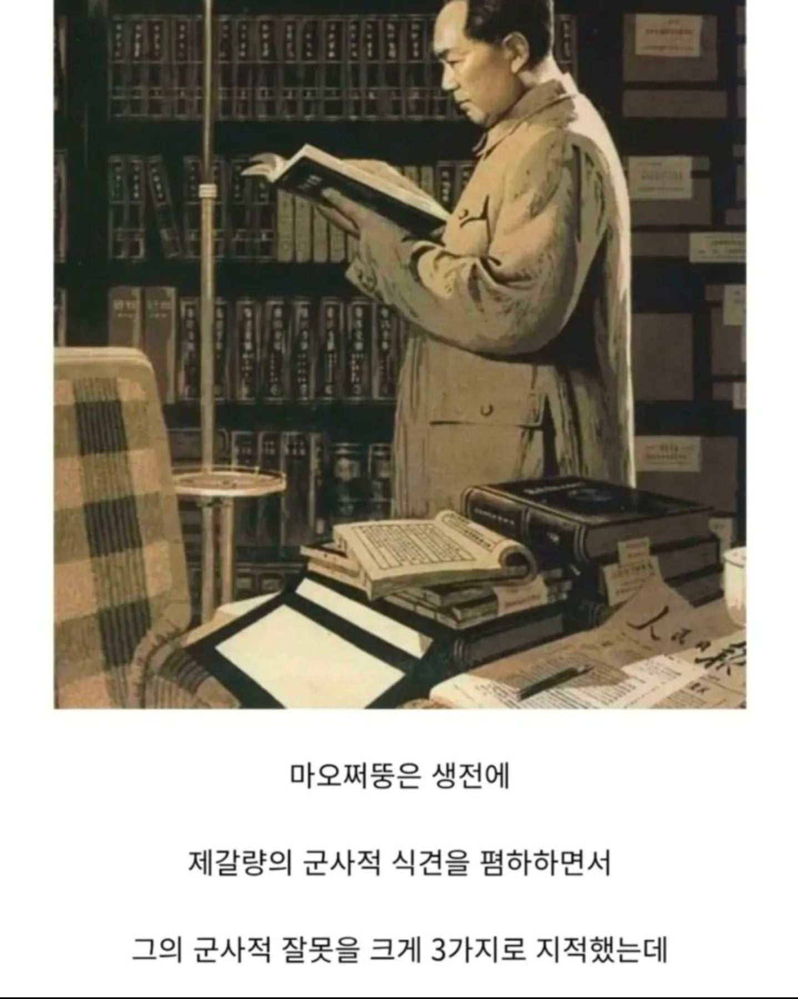
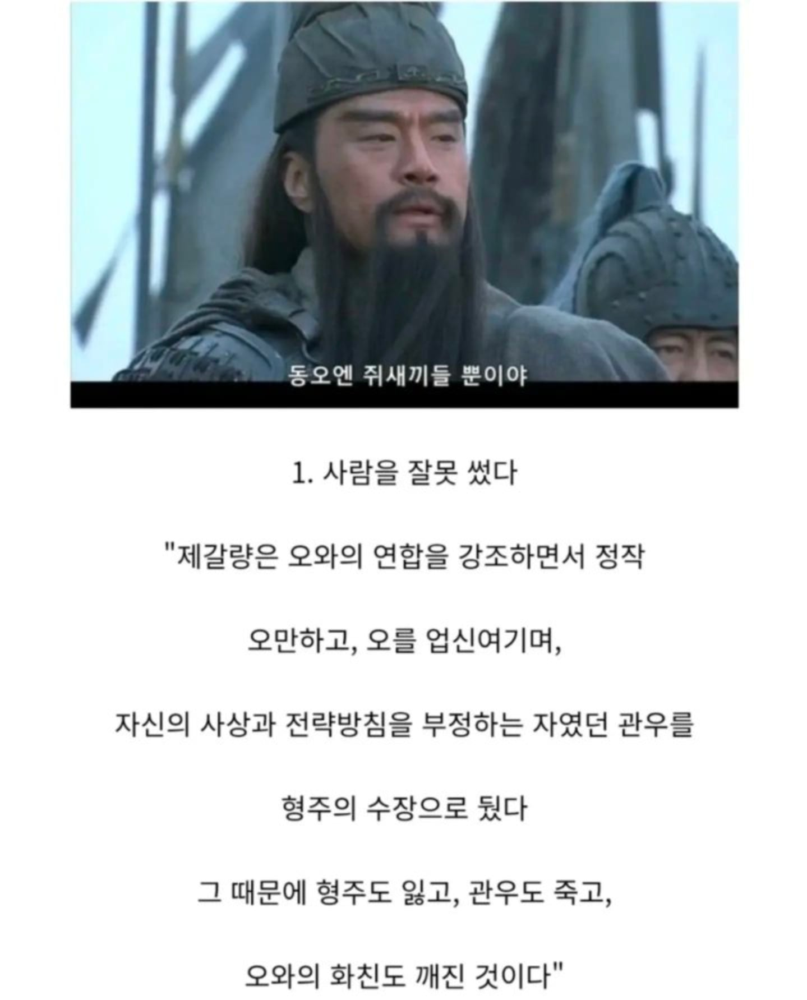
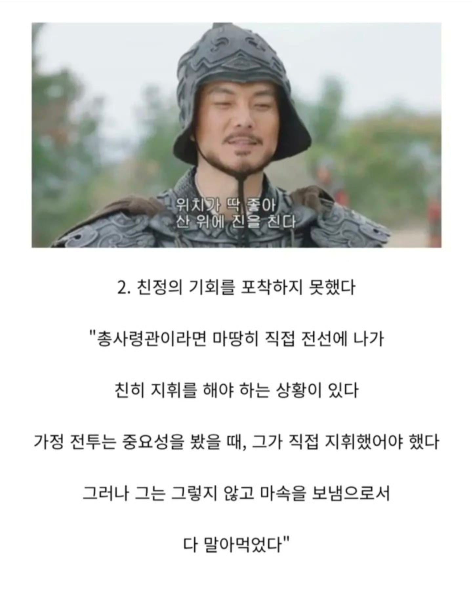
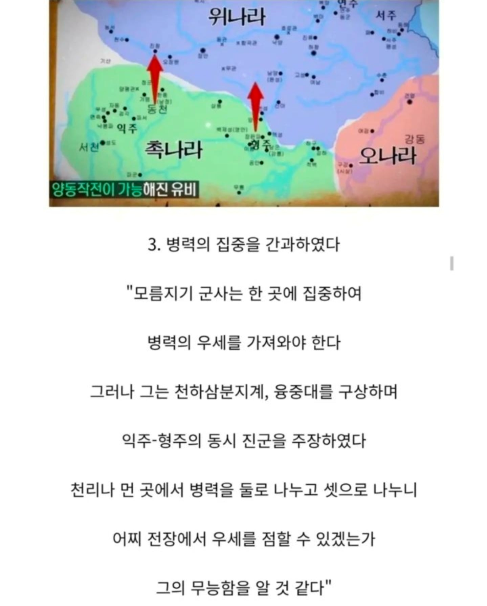

그는 바로 마오쩌둥 되시겠다




다른건 몰라도 1번은 사마의도 왜 저랬지 싶을듯
그는 바로 마오쩌둥 되시겠다




다른건 몰라도 1번은 사마의도 왜 저랬지 싶을듯
촉이 삼국지 소설 주인공이라 거품이 ㅈㄴ 낀건 맞긴 함
다 알고 난뒤 얘기하는건 쉬움
대약진으로 나라 곱창낸새끼가 ㅋㅋㅋㅋㅋㅋ
123 다 맞는 말이네
1이야 누구나 인정하는거고
2는 조금 애매함, 다른 곳도 매우 중요해서
3도 맞는 말임, 애초에 위가 압도적인 강세인데
틀린말은 아닌데 1번은 유비인선이라 유비까는거고 2번도 좀 그런데? 가정전투의 중요성도 중요성이지만 거긴 보급로 지키는 전투지 대규모 회전을 하는 자리가 아님 친정할때 보급로를 지키러가겠냐? 대규모회전 지휘하러가야지 민심하나로 건국된거나 마찬가지인게 촉인데 사람을 사람으로도 안보던놈이 하니까 코메디같네 하긴 조국이 공격받는데도 세력늘릴 기회로 본놈이니까 ㅋ
맞는 말 했네 ㅋ 그러는 모똥 저색기는 오만한 쓰레기지
그냥 간단함 결과를 가지고 평가하는건 지나가던 똥먹던 누렁이도 할 수 있는 것
그나저나 마오쩌뚱 빠는 쨩꼐들 출몰 하길래 간만에 나무위키 봤더니 역시나 마오쩌뚱 문서는 쨩꼐발 민족 영웅화, 대한민국 발전에 영향 이지랄하는 수정 존나 도배네 ㅋㅋㅋㅋㅋㅋㅋㅋㅋㅋㅋ
나무위키 가서 보니까 마오쩌둥이 대한민국 발전에 영향 줬다는 건 중국에서 하도 개판을 치고 사람을 너무 많이 죽여서 한국에 반사이익을 줬다는 건데 이게 짱- 발 민족 영웅화인지는 좀...
택동이가 중국을 반세기동안 반신불수로 만들어놔서 그사이에 한국이 방해없이 크긴 했지
중원을 먹느냐 마느냐가 관건. 춘추전국시대, 진나라 백기에게 40만명이 장평~ 당하고도 기어코 복구해낸 명재상 곽개님의 조나라도 중원의 북부 일부만을 차치했을뿐... 하지만 삼국시대의 위나라는 실질적으로 조, 위, 한, 연, 제 땅을 다 먹고 있었지
2는 억까인게 마속이 산으로 가서 지랄할거라고 누가 알았겠어 ㅋㅋㅋ
나관중 소설만 읽은듯 ㅇㅇ
1은 죤나 개소린게 저당시 유비가 자기 본진을 믿고 맡길 사람 자체가 관우외엔 전무함 같은 유씨가 없어서
그리고 손권이 형주 노린게 하루이틀도 아니고 10년 넘게 마찰있다가 통수친건데 이게 어떻게 관우태도만 문제임? 태도는 양쪽이 서로 죶같이 굴었는데 결국 통수친새끼가 문제지
2번도 개소린게 저당시 작계의 가장 중요한부분은 서량 강족 포섭이었음 그래서 그걸 직접 제갈량이 한거라 쩌둥이 주장대로 총사령관이 직접 한거 쩌둥이말로 반박됨
3번도 촉의 공격지점이 낙양으로 명백하게 정해져있다는걸 감안해야됨
융중대의 핵심은 한중과 양양에서 동시 진겨인데 이경우 위나라의 수비거점은 장안과 완임 근데 이 두도시는 진령산맥에 가로막혀서 서로 보완이 안되고 한쪽이 뚫리면 바로 낙양까지 하이패스임
촉이 한쪽으로 몰빵하면 위도 몰빵으로 막는게 훨씬 쉽지 저렇게 양동하면 위는 낙양병력이 묶임 장안도 완도 지원 못하니까
마오쩌둥은 삼국지를 읽지도 저런말을 한 적도 없음
그렇게 똑똑한척을 한 우리 쩌뚱이 형님은 미친듯한 업적을 남기는데
그건 바로 전무후무한 정책으로 인한 사망자 수 임
집권 기간(1949~1976년) 동안 그의 정책과 정치적 박해로 인해
사망한 사람의 수는 역사학계에서 대략 4,000만 명에서 8,000만 명 사이로 추정된다고 함
이는 인류 역사상 단일 집권자가 초래한 가장 큰 규모의 인명 피해로 꼽힘
초기 토지 개혁 및 반혁명 분자 숙청 (1949~1953년)
- 최소 100만에서 500만
대약진 운동 (1958~1962년)
- 중국 정부 공식 발표: 비자연적 사망자 수를 약 2,158만 명
- 대다수의 역사학자와 인구통계학자는 사망자 수를 1,500만 명 에서 3,200만 명
- 역사학자 프랭크 디쾨터(Frank Dikötter) 등 최근 기록보관소를 연구한 학자들은 아사자와 학살 등을 포함한 초과 사망자 수를 약 4,500만 명
문화대혁명 (1966~1976년)
- 공식 사망자: 중국 공산당과 관련 기록 기준 약 170만 명
- 추정 사망자: 최소 100만 명 에서 최대 2,000만 명
집중에서 한타쾅 해야한다고 하는데 몰빵해서 올인뜨면 위나라가 숫자로 밀어버릴텐데
관우 마속을 욕해야지 왜 제갈량을 욕하노 ㅅㅂㅋㅋ
저말이 다 맞다고 쳐줘도 저거빼고 인생내내 매드무비 찍으신분인데 저런평가는 슈발 ㅋㅋ
제갈량은 말한마디로 수천만명을 죽이지 못했으니 모택동씨가 맞는듯
아가리술로 대기근을 일으키는 양반인데 제갈량은 범부가 맞지
백날 만두 쪄서 제사 지내봐라
1번은 자기가 최고 대장도 아닌데 함부로 인사 결정하기 힘들어서 참작 가능
2번은 좀 아쉽긴한데 이릉대전때 인재 날려먹어서 인재가 하도 없어서 어쩔수 없이 쓴거이며 그나마 맡길애는 까막눈이고 마속이랑 친분도 있어 이해 가능
3은 좀 애매하네 양동작전이 효과적이었을수도 있겠는데
옘병 천병 씹병을 떠네 진짜
개인 욕심에 나라 말아먹은 놈들 중에 하나인새키가
1번은 공감하면서도
적극동의해도 "그래서 대안은?" 하면 없음
당대 위상과 배경 및 스탯 다따져봤을때 관우가 최선이었고
만약 관우 안쓰고 형주터졌으면
당장 조조부터가 "관우 줘도 못쓰네 허접~" 이랬을듯
그리고 관우가 형주지켰으면 촉한으로 역사바뀌었을 수 있고
천통못했어도 형주사수 하나로만 올타임 장수 랭킹에 개근했을거임
1에 도달하기까지의 상황이 있을거임
제갈량이 보통사람도 아니고
애초의 촉하고 위랑 국력차이가 ㅈㄴ 남 + 이릉에서 유비가 다 말아먹음
이것만으로 촉의 삼국 통일은 불가능 아닌가
유방, 조광윤, 주원장이 옛날 인물들이고 모택동은 현대인물에 과가 너무 커서 그들과 비교할 생각은 못 해봤는데, 이룬 성취 생각하면 그들과 비교할 급이긴 하네